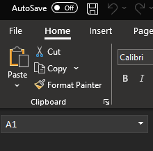

Excel first steps
excel
beginner
Previous attendees have said…
- 12 previous attendees have left feedback
- 100% said that this session was pitched correctly
- 100% would recommend this session to a colleague
Three random comments from previous attendees
- Informative and helpful
- The session was really good, I’ve been using excel almost daily for years and learned some really simple things that I didn’t know which will make working with it so much quicker and easier.
- Very informative, well presented, easy to understand.
- slides / pdf slides for this session
Welcome!
- this session is 🌶: a beginner-level introduction
- you’re very welcome to just watch, but if you want to follow along, you’ll need Excel of some sort
- totally informal and chatty, so cameras on etc etc
- also want to plug the M365 Skills Hub for NHSS folks
Session outline

A brief overview of Excel

- one of the oldest, and most widely used, pieces of desktop software
- ubiquitous in business, finance, health and social care…
- proprietary, closed-source, paid-for
- many versions
Central idea
- pieces of data are stored in cells
- one value, one cell
- cells are arranged into rows and columns

- arranging data like this allows us to analyse it
- good data analysis helps make services better
Data should help…
- answering which/when questions
- seeing effects of changes
- comparing different areas
- looking at services over time
- …
One word of warning before the practical part
- there are lots of versions of Excel
- they all work slightly differently
- please don’t panic if what you see looks slightly different from what I’m showing you
- please ask if you’re not happy/confident!
Opening Excel (desktop)


Opening Excel (web)

Interface

Save, close, open
 
- save your new workbook
- close it
- re-open it (possibly from recent files)
References
- every cell in Excel has a reference - like its address
- references look like this:
E7

Erefers to a vertical column7to a horizontal row
Data entry
- let’s add some data…
- we can type into the cells

- that data appears in the formula bar too
An example: school holidays
- https://www.scotborders.gov.uk/schools-learning/term-holiday-closure-dates/2
- make three headings in row 1:
name,start_date,end_date

Values
- let’s add some values from the school holidays webpage
- name of holiday
- start date
- end date
- dates usually go
DD/MM/YYYY- as we’ll see, Excel does lots of helping when we enter dates… - …😱
- dates usually go
- we’ll only need a few rows of data
name start_date end_date Mid-term holidays 14/10/2024 18/10/2024 In service day 21/10/2024 21/10/2024 St Andrew’s Day 02/12/2024 02/12/2024
Tidy data
- keep things consistent - spelling, case, formats, etc
- one piece of data per cell
- one instance per row (one school holiday per row)
- one variable per column (a column of names, one of start dates…)
Tables
- we can convert this group of cells into a proper table
- click in one of your cells of data

Insert>Table(orCtrl+T)

- click
OK
Lots of new things to see

Autofill
- we’ll add a formula to calculate how long our holidays are
- add a new column called
days - paste
= 1 + (C2 - B2)into the first cell of that new column- and look out for our session on formulas…
- double-click the green fill handle to fill the rest of the column

Formatting
- we can change the way that our spreadsheet looks
- we can also change the way our values look
Cell formatting
- some examples

- highlighting
- bold
- borders
Number formatting
- our dates are number formatted
- Excel dates are actually numbers (like
45583) formatted to look like dates - 1900 dates!
- percentages, £, …
Conditional formatting
- we can also format based on values

- take care though - this can be both ugly, and inaccessible